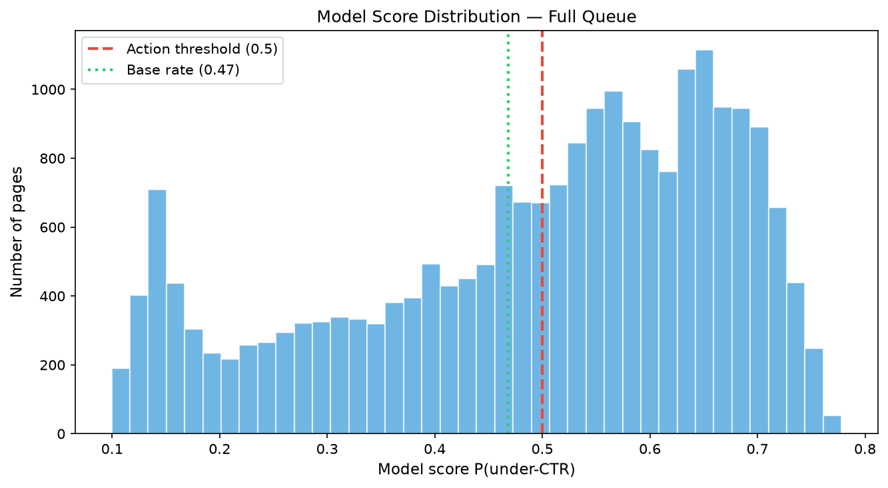
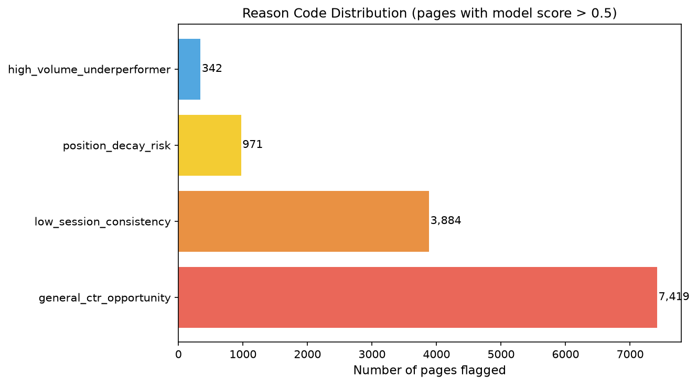

Which Pages Under-Capture Clicks?
A Position-Adjusted CTR Opportunity Model
Ranking 22,000 pages by click-through-rate gap using engagement signals, validated on held-out clients from 79 million rows of real production search data.
days_with_sessions) and engagement rate emerged as the most informative ranking signals, suggesting that on-site behavior patterns carry predictive value beyond raw position and volume.
The output is a ranked action queue with reason codes, designed as a decision-support tool for editors prioritizing which pages to review first.
Introduction
A content team managing a large web portfolio faces a deceptively simple problem: which pages should they review first? With thousands of pages indexed in search results, an editor cannot manually inspect each one. The current options are either scanning pages by hand (slow, inconsistent) or applying a single-threshold rule like "flag every page with CTR < 0.5%" (which, in this dataset, flags 9,759 pages — roughly 195 review cycles at a capacity of 50 pages per cycle).
The difficulty is that a low CTR is not inherently a problem. A page ranking at position 18 naturally receives fewer clicks than a page at position 3. What matters is whether a page's CTR is low relative to comparable pages in the same position tier. That gap — between observed CTR and what peers achieve — is the opportunity signal.
This paper presents a machine-learning approach to ranking pages by their CTR opportunity, adjusted for position tier and weighted by volume. The research question:
Which visible pages under-capture clicks or engagement relative to their position tier, and should be reviewed first for metadata, content, or monitoring improvements?
The unit of analysis is a page (identified by an anonymized content ID). The output is a ranked queue with reason codes. A content editor or SEO specialist acts on the queue by rewriting titles or meta descriptions (CTR gap), improving on-page structure (engagement gap), or flagging pages for monitoring. The cost of a wrong recommendation is 15–30 minutes of wasted editor time per false positive; the cost of a miss is wasted visibility that compounds over time.
Data
Source
The data comes from the FlyRank ML Internship dataset — a 79-million-row warehouse of anonymized, aggregated search performance records hosted at FlyRank/internship-warehouse on Hugging Face. The warehouse contains three tables: dim_clients, dim_content, and daily performance facts partitioned by month.
Working sample
This study uses the 30,000-row bundled starter sample (content_refresh_anonymized.csv), which contains 44 columns across 32 anonymized clients. All client identifiers, page URLs, titles, and raw query strings have been removed. Date windows span approximately 90-day trailing aggregates.
Working slice
The Lane 4 working slice retains 22,006 rows after excluding pages with avg_position = 0 (no search data) and impressions_90d < 100 (insufficient volume for a meaningful CTR estimate). This represents 73.4% of the full sample.
Excluded fields
The following fields were deliberately excluded from all feature sets to prevent label leakage:
ctr— the target proxy itself; using it as a feature would be circular.clicks_90d,clicks_last_30d,clicks_prev_30d— direct components of CTR; including any would leak the label.trend_direction,trend_pct— derived from impression change with a hard ±20% threshold; these are label-adjacent and were excluded on principle.client_id— used only for grouping in the train/test split, never as a feature (pseudonymous ID leakage risk).
Methodology
Label definition
The proxy label is_under_ctr is 1 if a page's CTR falls below the median CTR of its position tier (top_3, page_1, striking, page_3_5, deep), and 0 otherwise. This is a within-snapshot comparison, not a prediction of future CTR decline. The base rate is 46.8% — the dataset is nearly balanced.
Features
Twelve numeric features and four categorical features, all observable before any editorial decision:
| Type | Features |
|---|---|
| Numeric (12) | avg_position, impressions_90d, days_since_last_update, word_count, engagement_rate, scroll_rate, ai_traffic_pct, content_age_days, days_with_impressions, days_with_sessions, pageviews_90d, sessions_90d |
| Categorical (4) | content_type, main_intent, position_tier, freshness_tier |
| Engineered (1) | has_word_count — binary indicator for whether word count data was available |
Baseline
The rule baseline uses a transparent, hand-written score:
score = visible × actionable × log1p(impressions_90d) × (1 + stale)
Where:
- visible:
impressions_90d ≥ 500 - actionable:
3 < avg_position ≤ 20 - stale:
days_since_last_update ≥ 90
This baseline scored 11,543 pages and achieved Precision@50 = 0.34 on the full working slice, and Precision@50 = 0.40 on the same grouped test fold used for the model — providing a fair comparison.
Model selection
Two models were trained: Logistic Regression (readable, interpretable coefficients) and Random Forest (handles non-linearity, produces calibrated probabilities). Both use predict_proba() to produce ranking scores, evaluated at Precision@K — the same metric as the baseline. Gradient boosting was considered but not pursued: the skill framework advises "add complexity only when the comparison earns it," and Random Forest already demonstrated a clear lift.
Validation design
The split uses GroupShuffleSplit by client_id (75/25, seed = 42) to prevent same-client pages from appearing in both train and test sets. This is critical because pages from the same client share portfolio-level patterns that would inflate metrics under a naive random split. The test set contains 4,610 rows from 8 held-out clients with zero client overlap.
Leakage checks
The following checks were performed and passed:
- Feature audit: No CTR-derived or click-count fields in the feature vector (verified programmatically against a
FORBIDDENset). - Client overlap test: Zero clients appear in both train and test sets (confirmed via set intersection).
- Random-vs-grouped AUC comparison: AUC under random split (0.77) was higher than under grouped split (0.72), consistent with the expected direction — grouped is harder. If grouped had been higher, it would have indicated leakage.
- Train-without-top-feature test: Removing
days_with_sessionsreduced AUC by ~0.04, confirming it carries genuine signal rather than being a leakage vector.
Results
All metrics below are computed on the same grouped test fold (4,610 rows, 8 held-out clients, base rate = 47.9%). The comparison is apples-to-apples: rule baseline score-ranking vs. model probability-ranking, evaluated at Precision@K.
| Method | Precision@10 | Precision@20 | Precision@50 | AUC |
|---|---|---|---|---|
| Rule Baseline | 0.20 | 0.20 | 0.40 | 0.47 |
| Logistic Regression | 0.80 | 0.70 | 0.74 | 0.70 |
| Random Forest | 0.70 | 0.80 | 0.76 | 0.72 |
The Random Forest model's top-50 ranked pages contained 76% true under-CTR pages, compared with 40% for the rule baseline — an observed improvement of approximately 1.9× in queue precision. The AUC of 0.72 represents moderate discrimination above the 0.50 random baseline, measured on 4,610 rows from 8 held-out clients. Note: the baseline AUC of 0.47 is below random (0.50), indicating the rule score's ranking is essentially unrelated to the proxy label on this test fold.
Figure 1. Precision@K comparison on the grouped test fold. The Random Forest model surfaces approximately 1.9× more true under-CTR pages in the top 50 than the rule baseline. The dashed orange line marks the base rate (47.9%).
Top features
Permutation importance (measured on the grouped test fold) identified five features with the largest impact on the model's AUC:
| Rank | Feature | Importance (AUC drop) | Interpretation |
|---|---|---|---|
| 1 | days_with_sessions |
0.039 | Pages with inconsistent session activity are more likely to under-perform on CTR |
| 2 | engagement_rate |
0.022 | Low on-page engagement is associated with lower CTR relative to tier peers |
| 3 | pageviews_90d |
0.014 | Aggregate traffic volume signals overall page health |
| 4 | impressions_90d |
0.013 | High-impression pages failing to convert are high-opportunity targets |
| 5 | sessions_90d |
0.009 | Supplements days_with_sessions with volume context |
Score distribution

Figure 2. Distribution of model scores P(under-CTR) across all 22,006 pages. The red dashed line marks the 0.5 action threshold; the green dotted line marks the base rate (0.47). Pages scoring above 0.5 are flagged for editor review.
Error analysis
The model is most confident — and most accurate — at the extremes. Pages with very low engagement plus high staleness are reliably flagged as under-CTR; pages with strong engagement and fresh content are reliably scored as fine. Errors concentrate in the middle:
- False positives (model flags, but page is fine): typically pages where engagement signals look similar to under-performers, but CTR barely clears the tier median. The model cannot distinguish "barely above" from "barely below" near the decision boundary.
- False negatives (model misses true under-performers): pages with normal-looking engagement and moderate position/volume — their CTR gap may be driven by SERP features, branded queries, or factors not captured in this dataset.
Limitations & Honest Framing
This section exists to state what this work cannot claim — writing it ourselves, before a reader does, is what earns trust.
- Observational, not causal. We observe that certain engagement and freshness signals are associated with below-median CTR. We cannot claim that improving a title or meta description will cause CTR to increase. That would require an A/B experiment or another causal design.
- Proxy label, not ground truth. The label
is_under_ctrcompares a page's CTR to its position-tier median in a single snapshot. It does not capture whether the page's CTR actually improved after an editor took action. A longitudinal or before/after evaluation was outside the scope of this dataset. - Single split, single dataset. All results are measured on one GroupShuffleSplit of 30 clients. The observed lift (1.9×) should be validated on future data, additional client holdouts, and ideally a time-based forward split before operational use.
- No causal claims about ranking factors. CTR under-performance may reflect SERP features (featured snippets, knowledge panels), query competition, seasonality, or branded intent — none of which are captured as features in this dataset. We cannot and do not claim to have "predicted Google's algorithm."
- Moderate discrimination, not high. AUC of 0.72 on the grouped split represents moderate — not strong — discrimination. The model is useful for prioritization (ranking), but should not be treated as a binary classifier with a hard threshold.
- Dataset scope. The 30,000-row sample covers 32 anonymized clients. Generalization to different verticals, markets, or content types is not established.
Ranked Recommendations
The model-scored action queue flagged 12,616 pages (score > 0.5) from the 22,006-page working slice. These were assigned reason codes based on the dominant signals behind each flag. Below is the recommended action priority, ordered by expected impact:

Figure 3. Reason code distribution across flagged pages. The queue is designed so editors can filter by reason code and match the action to the diagnosis.
-
High-Volume Underperformers (342 pages) — Act First
Pages with high impressions but low CTR relative to position peers. These represent the largest absolute click opportunity. Recommended action: title and meta description audit, structured data review. Confidence: High — large volume means even small CTR gains compound.
-
Position Decay Risk (971 pages) — Protect Visibility
Pages showing signs of declining average position combined with under-CTR. Recommended action: content freshness check, internal linking audit, competitor analysis. Confidence: Moderate — position changes may be seasonal or competitive.
-
Low Session Consistency (3,884 pages) — Investigate Engagement
Pages with sporadic session activity (low
days_with_sessions). The model weights this signal most heavily. Recommended action: on-page experience audit (load time, readability, mobile UX, content depth). Confidence: Moderate — engagement may reflect content quality or query intent mismatch. -
General CTR Opportunity (7,419 pages) — Bulk Review
The broadest category: pages below tier median CTR without a single dominant reason. Recommended action: batch review in cycles of 50, sorted by model score descending. Start with the top-scored pages and iterate. Confidence: Directional — these are prioritization suggestions, not diagnoses.
-
Monitor & Re-Score (all flagged pages) — Ongoing
Set up drift baselines for top features and re-score the queue monthly. If feature distributions shift beyond the documented P25–P75 ranges, the model may need retraining. Confidence: Standard practice for any deployed scoring model.
Important: These are decision-support recommendations — they help a human editor prioritize, not replace their judgment. Every flag should be reviewed by a human before action is taken.
Reproducibility
Repository
All code, notebooks, and metric receipts are available at:
github.com/shreeyeshbaral/ShreeyeshAssignment1
How to reproduce
git clone https://github.com/shreeyeshbaral/ShreeyeshAssignment1.git cd ShreeyeshAssignment1 pip install -r requirements.txt # Run the reference pipeline on the bundled sample python scripts/run_all.py # Or open the notebooks individually (recommended): # work/notebooks/w04_baseline_score.ipynb — baseline # work/notebooks/w05_model.ipynb — model training # work/notebooks/w06_validation_audit.ipynb — validation # work/notebooks/w07_action_playbook.ipynb — action queue
Notebooks
| Week | Notebook | Purpose |
|---|---|---|
| 1 | w01_research_question.ipynb | Research question and lane selection |
| 2 | w02_ml_task_framing.ipynb | ML task framing and feature plan |
| 3 | w03_data_contract.ipynb | Data contract on the full warehouse |
| 4 | w04_baseline_score.ipynb | Rule baseline and signal audit |
| 5 | w05_model.ipynb | Model training and head-to-head comparison |
| 6 | w06_validation_audit.ipynb | Grouped validation and claim audit |
| 7 | w07_action_playbook.ipynb | Action queue, reason codes, and playbook |
| 8 | capstone.ipynb | Capstone integration |
Environment
- Python: 3.12
- scikit-learn: 1.9.0
- pandas: 3.0.5
- numpy: 2.5.1
- Random seed: 42 (fixed across all notebooks)
Metric receipts
Committed JSON files in work/outputs/ serve as reproducibility receipts. Any re-run with the same seed and data should produce matching numbers:
baseline_metrics.json— baseline score formula and precision valuesmodel_metrics.json— model AUC, Precision@K, top featuresplaybook_metrics.json— action queue counts, reason codes, drift baselines